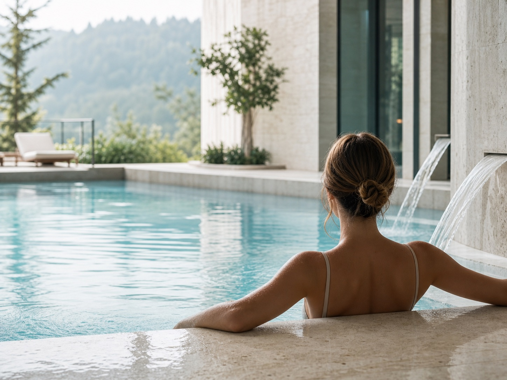

Sanatoriy protseduralari
To'liq tiklanish uchun 36 ta texnika
Kompleks dasturlar diagnostika, gidroterapiya, fizioterapiya va tiklanishning har bir bosqichida tanani qo'llab-quvvatlash uchun qo'shimcha usullarni birlashtiradi.

Sizning sog'liq uchun yo'lingiz
Kompleks dasturning bosqichlari
Biz mehmonlarni birinchi uchrashuvdan natijalar birlashtirilgunga qadar kuzatib boramiz. Har bir bosqich avvalgisini to'ldiradi va tanani yumshoq va ishonchli tarzda tiklashga yordam beradi.
-
01
Diagnostika va rejalashtirish
Dastlabki tekshiruv va tor mutaxassislar bilan maslahatlashuvlar shaxsiy davolanish dasturini tashkil qiladi.
-
02
Mineral muolajalar
Gidroterapiya, SPA marosimlari va apparat terapiyasi tiklash jarayonlarini ishga tushiradi va kuchlanishni engillashtiradi.
-
03
Kursdan keyingi yordam
Diyet tavsiyalari, qo'shimcha dasturlar va keyingi tekshiruvlar taraqqiyotni saqlab qolishga yordam beradi.
-
04
Natijani mustahkamlash
Nazorat ko'rigi va uy uchun tavsiyalar kompleks dastur ta'sirini muloyim saqlashga yordam beradi.
To'g'ri tashxis
Diagnostika va monitoring
Zamonaviy jihozlar tananing holatini tezda aniqlashga va optimal davolash dasturini tanlashga yordam beradi.
- Sinov natijalari etkazib berilgandan keyin 24 soat ichida
- Laboratoriya, Logiq ultratovush va Burdick ekspert klassi EKG
- Kelgan kuni shaxsiy shifokor tayinlashlari
- Klinik va biokimyoviy laboratoriya
- Ultratovush tekshiruvi - Logiq (Germaniya)
- EKG tadqiqoti - 12 kanalli Burdik (AQSh)

Harakat va tiklanish
Reabilitatsiya va mashqlar terapiyasi
Mashqlar va terapiya majmuasi mushak-skelet tizimini mustahkamlaydi va mushaklarning kuchlanishini engillashtiradi.
- Shifokor ko'rsatmalariga ko'ra individual mashqlar terapiyasi dasturlari
- Xavfsiz rivojlanish uchun hamrohlik qiluvchi o'qituvchilar
- Taranglikni olib tashlash va ohangni tiklash uchun massaj usullari
-
Jismoniy mashqlar bilan davolash xonasi
Devor panjaralari, og'irliklar, sakrash arqonlari, halqalar, yugurish yo'lakchasi, mashq velosipedi, chang'i mashinasi va vazn yo'qotish uchun tebranish mashinasi bilan jihozlangan.
- Terapevtik massaj, mexanik massaj va tebranish massaji
-
Orqa miya tortilishi
Mexanik xizmatlarning standart paketiga kiritilgan, suv osti kompyuteri mutaxassis tomonidan belgilangan tartibda amalga oshiriladi.
Suv ostida tortish qo'shimcha xarajat qiladi - Servikal umurtqalarning pnevmatik tortishi
-
Nuga Best
Turmaniy toshli termoterapiya massajchisi.
Qo'shimcha to'lov - Qo'lda massaj Qo'shimcha to'lov
Suvning mineral kuchi
Gidroterapiya va SPA marosimlari
Mineral vannalar va dushlar qon aylanishini yaxshilaydi, stressni engillashtiradi va immunitet tizimini qo'llab-quvvatlaydi.
- O'z qudug'imizdagi mineral suv tabiiy muvozanatni saqlaydi
- Qulay dam olish uchun saunalar va basseynli SPA maydoni
- Teri ohangini tiklash uchun muallifning dush marosimlari
- Mineral va marvarid vannalari
- Dumaloq dush
- Suv osti massaji
- Girdobli vannalar
- To'rt kamerali galvanik vanna
- Yo'g'on ichakni sug'orish
- Ginekologik sug'orish
-
Terapevtik saunalar bilan yopiq suzish havzasi
Majmua 2014-yilda to‘liq rekonstruksiya qilingan.
- Karbonat angidrid vannasi Qo'shimcha to'lov
- Vichy dush
Uskuna texnikasi
Fizioterapiya va apparat bilan davolash
Fizioterapevtik usullar tanaga yumshoq va maqsadli ta'sir ko'rsatadi, regeneratsiyani tezlashtiradi va nafas olish tizimini qo'llab-quvvatlaydi.
- Maqsadli davolash uchun so'nggi avlod qurilmalari
- Harorat va intensivlikni nazorat qilish bilan og'riqsiz usullar
- Dasturni o'z vaqtida sozlash uchun biz dinamikani kuzatib boramiz
- Akupunktur Qo'shimcha to'lov
- Infraqizil lazer
- Akupunktur magnit terapiyasi
- Uskuna magnit terapiyasi
- Ultrasonik nebulizer
- Tubus
- Elektroforez
- Amplipuls
- UHF terapiyasi
- Darsonval
- Parafin-ozokerit
- Loy terapiyasi
2009 yilda foydalanishga topshirilgan.
- Fototerapiya

Qo'shimcha yordam
Qo'shimcha dasturlar
Mualliflik kurslari va tabiiy vositalar asosiy davolash rejasini yaxshilaydi va natijani mustahkamlashga yordam beradi.
- Biz qo'llab-quvvatlash rejasini tuzamiz va uy uchun tavsiyalar beramiz
- Tuzli g'or va kislorod ko'piklari nafas olish tizimini mustahkamlaydi
- Tabiiy infuziyalar va hirudoterapiya asosiy kursni yaxshilaydi
- Umumiy tiklovchi dori terapiyasi
- Hirudoterapiya Qo'shimcha to'lov
-
Tuz g'ori
O'pka kasalliklarining oldini olish uchun.
Qo'shimcha to'lov - Dorivor infuziyalar va kislorod ko'piklari
Shaxsiy dastur
Bilish muhim
Ko'pgina protseduralar sayohat dasturiga kiritilgan va shifokor bilan maslahatlashganidan keyin belgilanadi. "Qo'shimcha to'lov" sifatida belgilangan xizmatlar shaxsiy so'rov bo'yicha mavjud.